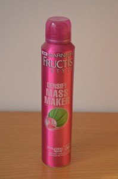
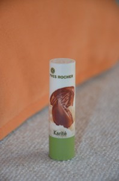

No to je zase nadělení! Nějak se toho za měsíc září sešlo víc, než jsem čekala. Ovšem plácám se uznale po rameni za to, jak jsem letos úspěšně odolala svodům Dnů Marianne :D!
Antiperspirant Sensitive, Cien
Tyhle antiperspiranty z Lidlu mám celkem ráda pro jejich mini-velikost – jsou super na cesty. Neúčinkují úplně na sto procent, ale když to porovnám s mnohdy dražšími a „značkovějšími“ kousky z drogerií, za ty peníze jsou víc než fajn. Tento antiperspirant má celkem nenápadnou mýdlovou vůni, takovou trochu retro :D. Hliník ve složení nepřekvapí, ale ani nepotěší…
 Sprej na vlasy „Mass Maker“, Garnier
Sprej na vlasy „Mass Maker“, Garnier
V oblasti vlasové kosmetiky mě málokdy něco dokáže skutečně nadchnout, ale tento výrobek si myslím zaslouží trochu pozornosti. Jedná se o sprej pro vytvoření rozsuchaného vzhledu, který se aplikuje ke kořínkům vlasů. Povrch vlasů poté jakoby „zhrubne“ a účes působí objemnějším dojmem. Efekt je dlouhodobý, sprej vlasy nemastí ani nezatěžuje. Navíc pěkně ovocně voní. Není ani nijak drahý – dá se sehnat už za 60-70 Kč. Pokud máte chuť vyzkoušet nějaký nový stylingový produkt, který dodá vašemu účesu dlouhodobý objem, za sebe můžu tento kousek určitě doporučit.
Balzám na rty Karité, Yves Rocher
Yves Rocher před nějakým časem inovovali svou řadu balzámů na rty, a tak jsem se rozhodla vyzkoušet také jeden vzorek. Vybrala jsem si ten s obsahem bambuckého másla, který by měl okamžitě vyživit a zklidnit poškozené rty. Balzám typicky sladce voní, docela hezky rty zjemní, ale v oblasti hydratace to žádný velký zázrak zase není – na poškozené rty je podle mě krátký a když jsem třeba seděla v klimatizovaném prostoru, od nepříjemného vysušení rtů mě rozhodně nezachránil. Za mě je to tedy spíš takový průměr, který můžete nosit jako nouzovku v kabelce, ale nic extra od něj nečekejte. Každopádně chválím YR za vylepšení obalu, který je teď mnohem bytelnější a praktičtější, než byl ten předtím.

Oční linky Scandal Eyes, Rimmel (odstín 001 Black/Noir)
Z tohoto výrobku jsem upřímně dost zklamaná. Linky jsem totiž použila jenom párkrát a pak prostě vyschly :(. Nevím, jestli to bylo jen vadným kouskem, ale přišlo mi, že už od začátku malují slaběji, než bych si představovala, a černočerné rozhodně nebyly. Co mi na nich přišlo docela fajn, je velice tenký hrot, se kterým by se dala vyčarovat přesná linka – kdyby ten hrot tedy maloval, že. Linky by měly být dokonce i voděodolné, ale to už jsem vůbec neměla možnost otestovat. No, za sebe je bohužel doporučit fakt nemůžu, ale jestli s nima máte lepší zkušenost a měla bych jim dát ještě šanci, podělte se v komentáři.
 Pleťový olej Avenia, Saloos
Pleťový olej Avenia, Saloos
Pleťové olejíčky od Saloos jsem si vážně oblíbila. V drogeriích ale bohužel nenabízí moc široký sortiment, začala jsem tedy pátrat na internetu, až jsem objevila web Parfums.cz. Krom toho, že tu naleznete výrobky Saloos za příznivější ceny než třeba v DMku, máte na výběr z opravdu široké škály produktů pro všechny druhy pleti. Tento olejíček Avenia je vhodný zejména pro pleť se sklonem k rozšířeným žilkám a začervenání. Pleť by měl zklidnit a zmírnit pocity pnutí. Musím říct, že je opravdu báječný. Nemá sice tak líbivou vůni, jako levandule, kterou jsem používala předtím, zato mi však příjde mnohem výživnější, mastnější. Pleť krásně zvláční, ale neucpává. Olej Avenia je vyrobený z bio olejů lisovaných za studena a 100% přírodních esenciálních olejů. Neobsahuje konzervační ani syntetické vonné látky. Jsem z něj opravdu nadšená a můžu ho jen doporučit. Cena na Parfums.cz: 136 Kč.

Zjemňující pleťová voda, Garnier
V oblasti pleťové kosmetiky podle mě značka Garnier nepatří k žádným velkým zázrakům, ale z nějakého záhadného důvodu u mě skončil tento kousek určený pro suchou pleť. Pleťová voda s ochranným výtažkem z růže slibuje tonizaci a zjemnění pleti. Z mého pohledu toho moc nedělá a pleť akorát vysušuje. Má celkem nenápadnou, lehce nasládlou parfemaci. Složení je poměrně stručné, ale ani tak v něm nechybí paraben nebo PEG. Nejvíce tristní je na tomto výrobku ovšem jeho obal – to šíleně nepraktické Garnier balení a konkrétně uzávěr, který má tak blbej otvor, že vám z něj půlka produktu vždycky vyteče úplně mimo. A tyhle obaly se vyrábí co pamatuju a ještě stále je bohužel nijak neinovovali :(! No, myslím, že tohle byl zase na nějakou dobu poslední Garnier výrobek v mé koupelně.
 Balzám na ruce Rakytník řešetlákový, Bione
Balzám na ruce Rakytník řešetlákový, Bione
Čas od času ráda zavítám do drogerie Teta, kterou sice jinak nijak zvlášť v oblibě nemám, nicméně zatím jsem ještě nikde jinde nenarazila na tak bohatý výběr výrobků české kosmetiky značky Bione. Pokud vám dosud tato značka unikala, doporučuju jí věnovat pozornost! Za fajn ceny vyrábí zajímavou kosmetiku, která neobsahuje silikony, parabeny ani ropné produkty, zato v ní najdete přírodní složky. Na každém obale je navíc o výrobku uvedeno i vyčerpávající povídání. Tento balzám na ruce s rakytníkem je velmi lehký, ale zároveň dostatečně zvláčňující krém. Vstřebává se celkem rychle, i když lehký pocit mastnoty na rukou zůstává, to zas ne že ne. Příjde mi, že je bez parfemace – voní velice jemně a čistě, jako klasické mýdlo. Krom extraktu z plodů rakytníku obsahuje např. bambucké máslo, vitamín E, panthenol a celou řadu dalších prospěšných látek. Balení o velikosti 200 ml vás vyjde na cca 60 Kč, což je více než příjemná cena.


{kind=link}
{kind=link}
{kind=link}